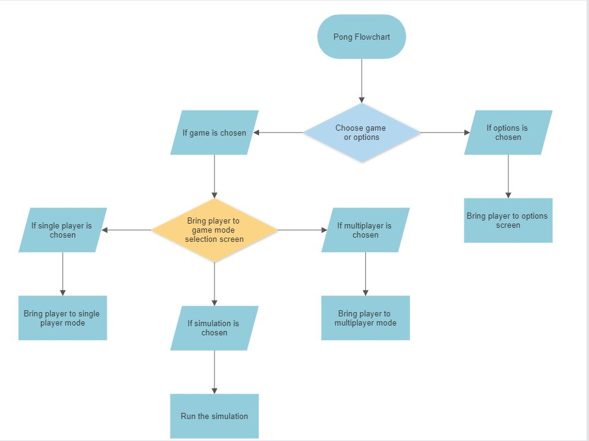
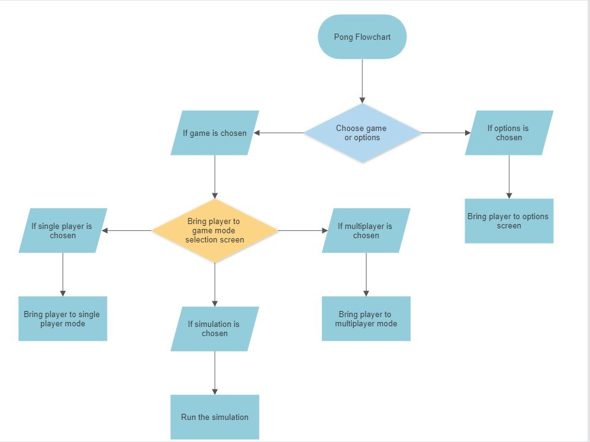

The project will be made utilizing a python module named pygame. Pygame allows you to create a visual, animated game rather than using the terminal to interact with it. When launched, the user will be greeted with a simple menu screen allowing him to change the difficulty (the ai opponent’s movement speed), play the game or quit the program. Afterwards the player will be able to choose the mode he wishes to play: single player, multiplayer or run a simulation. The settings for the simulation will have to be adjusted within the program file as pygame doesn’t offer any viable solution to change variables via the GUI. The game screen will be quite simple with a line through the middle, 2 displays for the player scores and obviously, the 2 paddles and a ball.
To introduce randomness into the game, the ball’s x and y speeds will be multiplied at random by either 1 or -1 during every game’s start. This means the ball can go any of 4 random directions when starting. The ball movement logic is quite simple, the ball’s speed is hardcoded and the ball’s position is updated by the value of its speed every frame, resulting in a smooth movement. When the ball collides with the paddle or the top or bottom wall, its corresponding speed is multiplied by -1 to reverse the direction of movement. When the ball collides with either of the 2 sides it's moved back to the middle and the corresponding player’s score is adjusted by 1. The AI is quite simple. It reads the ball’s current y position and does its best to keep the center of the paddle at the same y position. Because the ball moves slightly faster than the paddles, it’s still beatable. When exiting a game-mode, the scores are automatically saved in a csv file to be later used for analysis. This is done by putting the 2 scores into a list and writing that list into a csv file using python’s csv module.
The project utilizes abstraction in order to make a game usually played in 3D space, playable on a screen with a simple UI. The game has been reduced to its bare basics, 2 paddles bouncing a ball back and forth between each other. As with the real game, a point is scored when a player fails to return the ball to the other player. The program uses simple algorithms to model how a player would act while playing the game. As mentioned previously, the AI model is quite simple, taking the position of the ball and comparing whether it’s above, below or in line with the paddle. Modifying the speed at which it moves as well as the paddles’ speeds can make playing against this AI more, or less, challenging.
 
